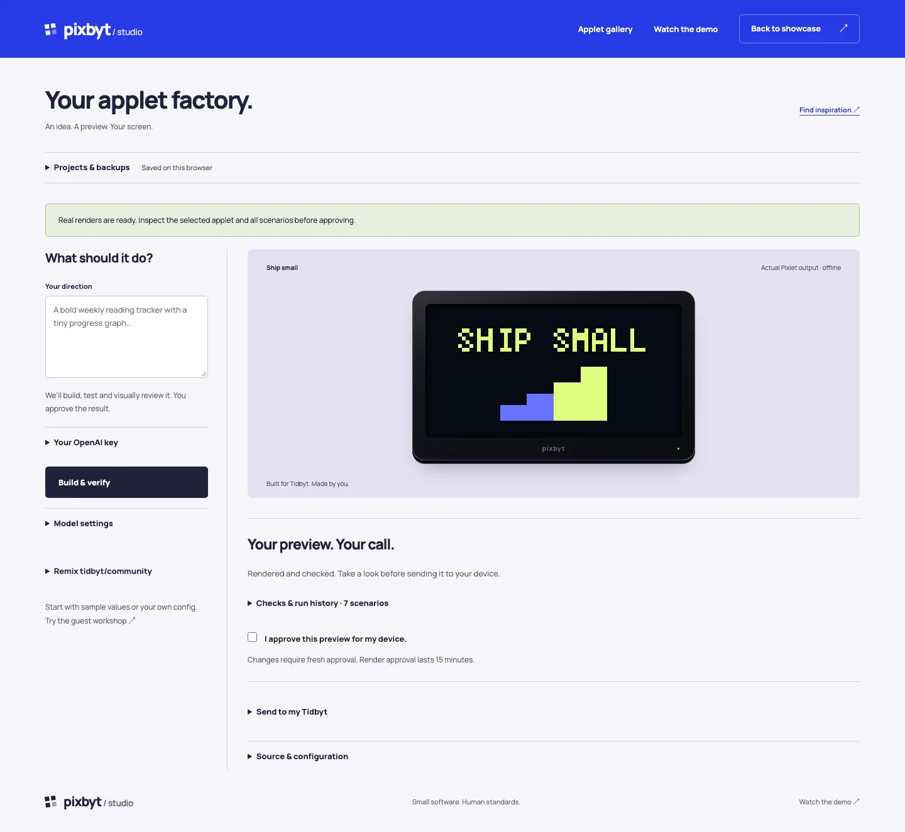
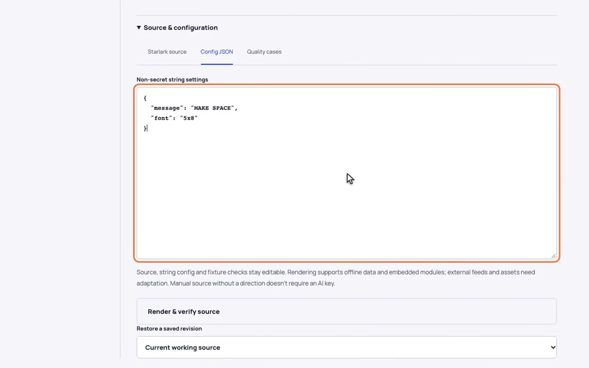
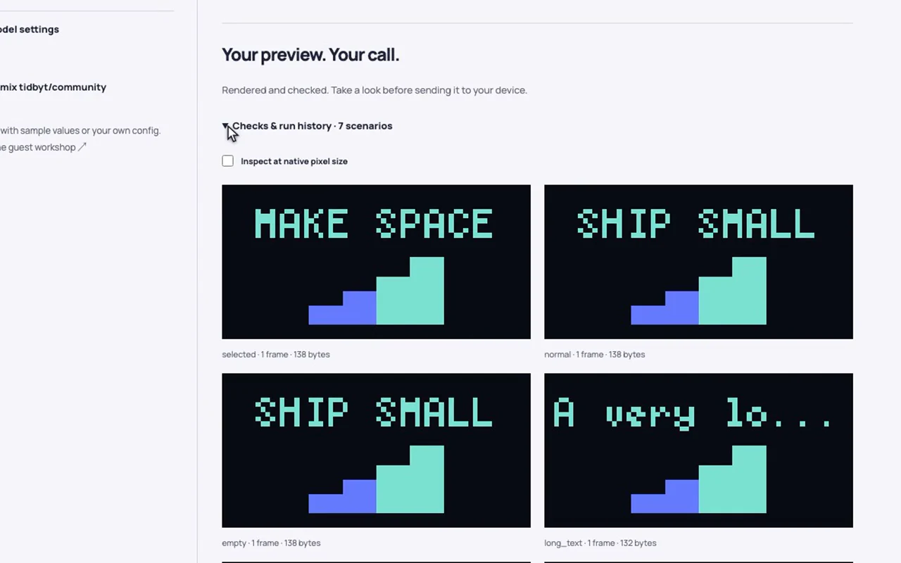

Pixbyt.
- TypeScript
- Vite
- Node.js
- Pixlet
- Python
- OpenAI
- Vercel Sandbox
An applet factory for a little screen. Turn an idea into editable source, real pixel renders, and a result you approve—not just an answer you accept.
Explore and render manual source without signup or an AI key. AI builds use your OpenAI key; sending an approved image uses your personal Tidbyt key. Source: github.com/amitshankar97/pixbyt-studio (private; access requires permission).


Your direction.
Your final say.
I built Studio for people who want to make something personal for a Tidbyt's 64×32 display without treating generated code as a finished product. Start with an idea or edit Starlark yourself. The workbench keeps source, configuration, quality cases, and run evidence available without putting every control in the way.
The public showcase offers a ferry board, a Tokyo transit concept, and Jimothy's original pixel art. Play or pause their actual rendered animations. Ferries use sample data; Tokyo is labeled Concept preview.
A factory with a quality bar.
Agents build. Executable gates check. You approve. Follow-up requests use the current source, configuration, cases, and latest diagnostic—not just the original prompt.
- Brief or current edits
- Generate or run source
- Render & check scenarios
- Review pixels & repair
- Approve exact revision
- Export or send to device
- Check the contract.
- Validate structured generation, bounded non-secret source/configuration, allowed imports, and quality cases. Normal, empty, long-text, and invalid-config fixtures are required; independently specified fallback expectations make failure states part of the task—not an afterthought.
- Render real pixels.
- Native Pixlet runs in a network-denied Vercel Sandbox. Every decoded frame must be non-solid, 64×32 WebP, within image and animation limits. Declared same/different cases compare decoded pixels. These checks catch execution and behavioral regressions, not beauty; a previous preview is not a new pass.
- Review what it made.
- The selected model receives actual scenario images and contact sheets containing every animation frame, plus the brief and source. It must cover every scenario for fulfillment, hierarchy, legibility, contrast, and semantics. Missing or contradictory review cannot pass—and a model's opinion is not a guarantee of taste.
- Repair within a budget.
- Generated validation errors, render failures, and failed visual findings share at most two repairs across the whole run, not two per stage. Exhaustion stops with editable output and evidence retained. Authentication, quota, infrastructure, and cancellation errors stop honestly, without pretending to be code failures or silently switching models.
- Release only this revision.
- The interface requires current checks and any required image review before your approval. Edits invalidate it. A signed render receipt binds the exact source, configuration, cases, and image; changed or expired payloads cannot push. Receipts expire after 15 minutes. Personal-device sends also check ownership; exporting a bundle is not release authorization.
Manual run: Run preview executes your current source and cases without an AI key or regeneration. Mechanical verification plus your visual inspection does not imply model review.
AI-built release: generated applets require a current passing image review. After manual edits, Review current image with AI critiques the new pixels without overwriting the code. A missing, failed, or incomplete review cannot authorize release.
Exact limits & release boundary
Output is limited to 200,000 bytes, 300 frames, and three seconds. The receipt protects render integrity; model review and human approval are interface policies, not server-certified taste or identity. Tidbyt API acceptance is not proof of physical receipt.


Make it yours.
Keep the source.
Starlark source, JSON configuration, and quality cases are separate working surfaces. The example below changes a message to MAKE SPACE; the scenario images that follow show the selected configuration alongside normal, empty, and long-text inputs.
Manual-source rendering needs no AI key. Projects and saved revisions live in the browser, with import/export for backups. Open the workbench to inspect the controls yourself.


Evidence you
can inspect.
The preview is only one part of the review. Scenario images expose what changes when inputs are missing, too long, or invalid. A selected configuration sits alongside those cases so you can judge the pixels you are actually about to approve.
Checks, run history, and exported evidence make the outcome inspectable. After edits, earlier evidence stays historical; it cannot authorize the next release.


Small surface.
Deliberate systems.
Studio uses TypeScript and Vite for the browser interface, Node.js Vercel Functions for orchestration, and ephemeral Vercel Sandbox instances for Pixlet rendering and Python image verification. OpenAI generation and image critique use the visitor's selected model.
Projects stay in the browser, with exportable backups. Generated applets run offline: there is no hosted scheduler or live-feed fetching. The older guest workshop's explicit GitHub bundle save is separate—not automatic project sync.
Watch the captioned walkthrough for a hands-on look at applet source and rendering.
Implementation & verification details
Public native rendering, source/configuration edits, rerendering, validation, and the signed-receipt approval gate have been independently exercised. Model and device paths also have unit/mock coverage; paid model calls and physical device delivery have not been exercised with user credentials. The showcase and film are not proof of those credentialed outcomes.
Built on an
existing foundation.
Studio is distinct from the original Go/HTMX Pixbyt application. That application supports authenticated applet management, community imports, Starlark/configuration editing, rendered previews, and manual image publishing to a configured Tidbyt device.
The original application's source and configuration live in Postgres. Studio's browser-local projects and the older guest workshop's GitHub bundle save are separate workflows, not a change to the original application's storage. Both source repositories remain private.